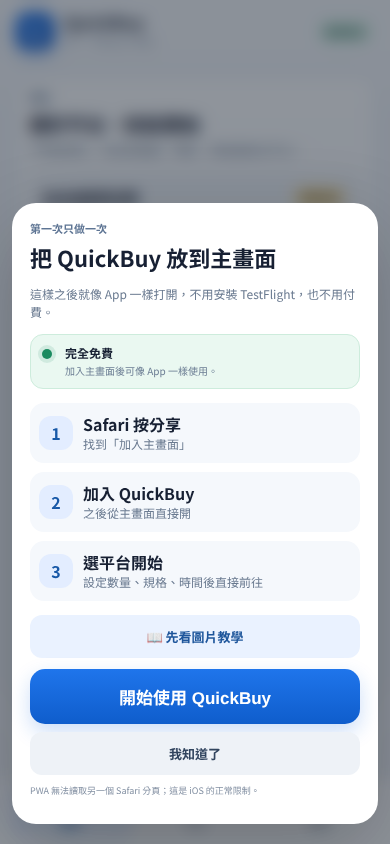
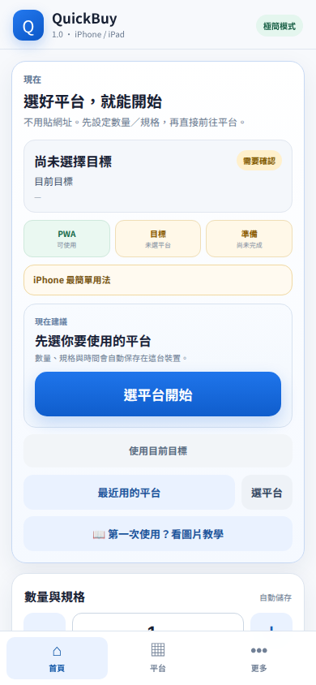
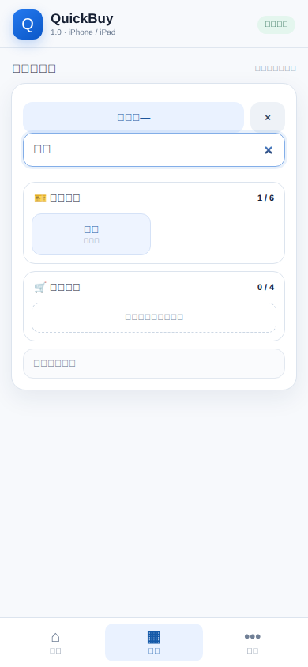
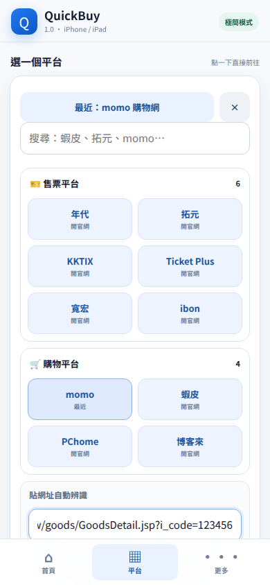
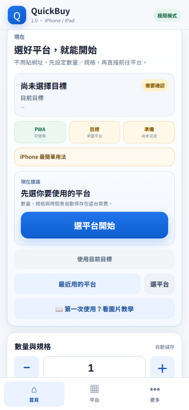
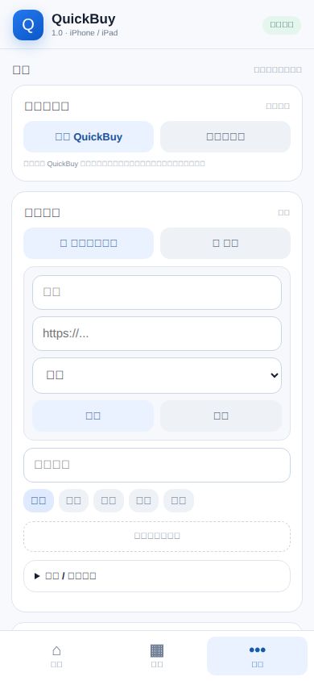

QuickBuy 怎麼用？
照下面順序操作就好。圖片都是 QuickBuy 正式手機版實際畫面。
1第一次開啟

第一次會看到加入主畫面的引導。你可以先按「我知道了」開始用；要放到 iPhone 桌面時，再用瀏覽器的「分享 → 加入主畫面」。
iPhone 用 Safari 或 Chrome 都能開 QuickBuy；加入主畫面後，之後直接點 QuickBuy 圖示最方便。
2先看首頁

首頁上方會顯示目前準備狀態。下方「數量與規格」會自動儲存，所以不用每次重打。
3選平台，或貼精準網址

只是要進常用平台時，可以直接搜尋拓元、KKTIX、ibon、蝦皮、momo 等平台後點一下前往。
如果你已經找到「特定商品／特定活動／特定場次」的網址，直接貼到「貼網址自動辨識」會更準。

QuickBuy 會辨識平台、保留商品或活動需要的網址參數，並移除 token、session 與追蹤參數。辨識成功後，可以直接按「前往」而不用再回首頁。
搶購前已經有商品或活動連結：優先貼原網址。只有要進平台首頁時才直接點平台。
4先填數量與規格

用 ＋／− 設定數量；「規格 / 票區」可以填 A區、一般票、2XL 等。也可以展開「開賣時間提醒」設定時間。
這些設定會留在手機裡，重新整理後仍會保留。
5收藏、備份與安裝

底部「更多」裡有分享 QuickBuy、加入主畫面、我的網站、備份與救援功能。「貼上網址新增」可以直接讀剪貼簿，把常用商品／活動頁存起來；「手動新增」則自己輸入。
6前往官方網站後
QuickBuy 負責幫你準備平台、數量、規格、時間與快速入口。到了售票或商城網站後，以下步驟仍由你親自完成：
登入、CAPTCHA、OTP、官方 Queue、3D Secure、付款與最後送出訂單。
QuickBuy 不會繞過網站的安全機制，也不會無人值守自動付款。
QuickBuy 不會繞過網站的安全機制，也不會無人值守自動付款。
QuickBuy 1.0 · 圖片教學與主程式分離，教學頁不會修改你的 QuickBuy 設定。